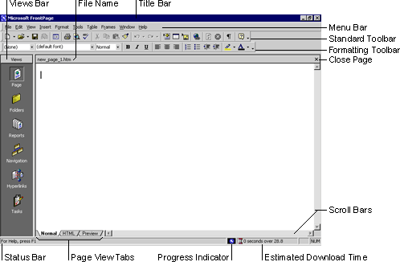

| ||||
 In the Answer Wizard, type:
In the Answer Wizard, type:FrontPage 2000 has a new, integrated interface that lets you create and edit Web pages and manage entire Web sites -- all within one application. All toolbars and menus are consistent with Microsoft Office applications and can be fully customized. You can also use convenient keyboard shortcuts to accelerate common tasks such as opening Web sites and pages, printing, and many other commands.

The Standard and Formatting toolbars are displayed by default. They provide easy access to the commands you will use most often when working in FrontPage.
What you see in the main application window depends on the currently selected view.
The icons on the Views bar provide different ways of looking at the information on your page or in your Web site. As you work with FrontPage, you'll frequently switch between views to match the current task at hand -- from the early steps of creating a page, to the moment a whole Web site is ready to be published on the World Wide Web.
When you start FrontPage, Page view is displayed by default. Page view is a powerful editing tool for creating and designing Web pages. As you enter text, place pictures, insert documents, create tables, make lists, and design the appearance of your Web pages, Page view displays them as they will appear in a Web browser. All HTML code is automatically created in the background and you don't need to manually edit any code unless you want to.
You'll begin working in Page view and learn about the other views later in this lesson.
Did you find this material useful? Gripes? Compliments? Suggestions for other articles? Write us!
© 1999 Microsoft Corporation. All rights reserved. Terms of use.